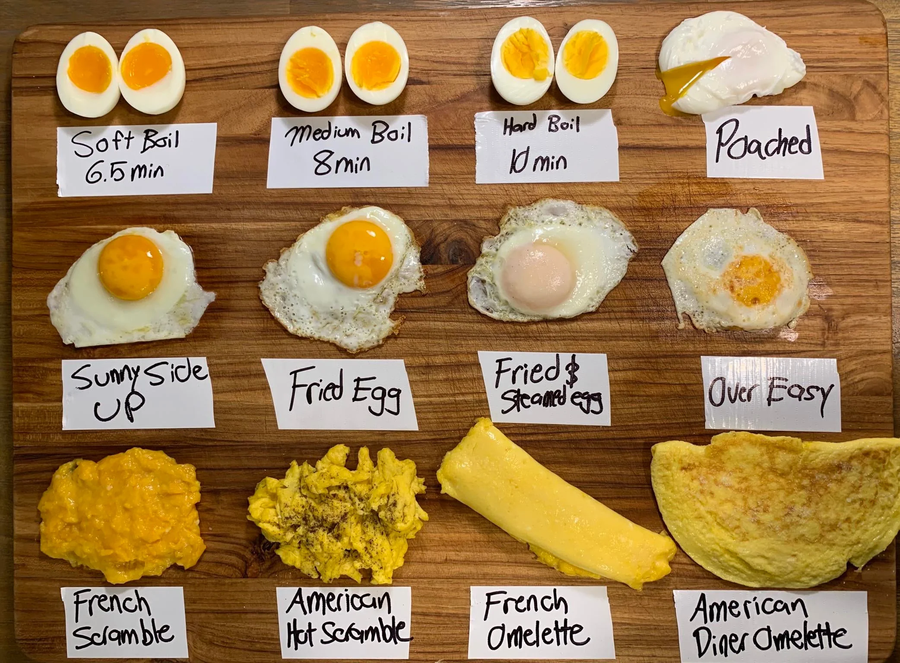

Eggs are used in many dishes across the globe due to many animals having the ability to lay eggs[3].
It can be scrambled, fried, boiled, poached, pickled. The yolk of the egg can act as a thickener in
some dishes and is where most of the fat is at while the whites of the eggs are where the protein lies.
It was can give some airiness to some dishes.
Cuisines
- 1. **Mexican** - A lot of dishes use eggs for breakfast dishes such as [_Huevos Rancheros_](https://en.wikipedia.org/wiki/Huevos_rancheros) and [_Huevos Moluteños_](https://en.wikipedia.org/wiki/Huevos_motule%C3%B1os) where eggs are the main component on the dishes and typically paired with ingredients like tortillas and beans.
- 2. **Japanese** - Many traditional dishes in Japanese cuisine use eggs as a main ingredient with dishes like [_Takoyaki_](https://en.wikipedia.org/wiki/Takoyaki) and [_Katsudon_](https://en.wikipedia.org/wiki/Katsudon).
- 3. **Chinese** - A couple of Chinese dishes use the whole egg as the main component of the dish and soak or preserve them using various methods like they do with dishes like[ _Century Eggs_](https://en.wikipedia.org/wiki/Century_egg) and the [_Salted Duck Egg_](https://en.wikipedia.org/wiki/Salted_duck_egg)